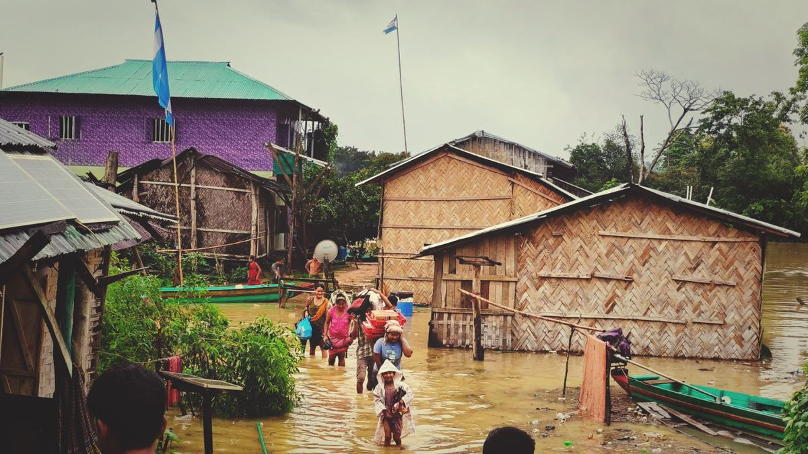
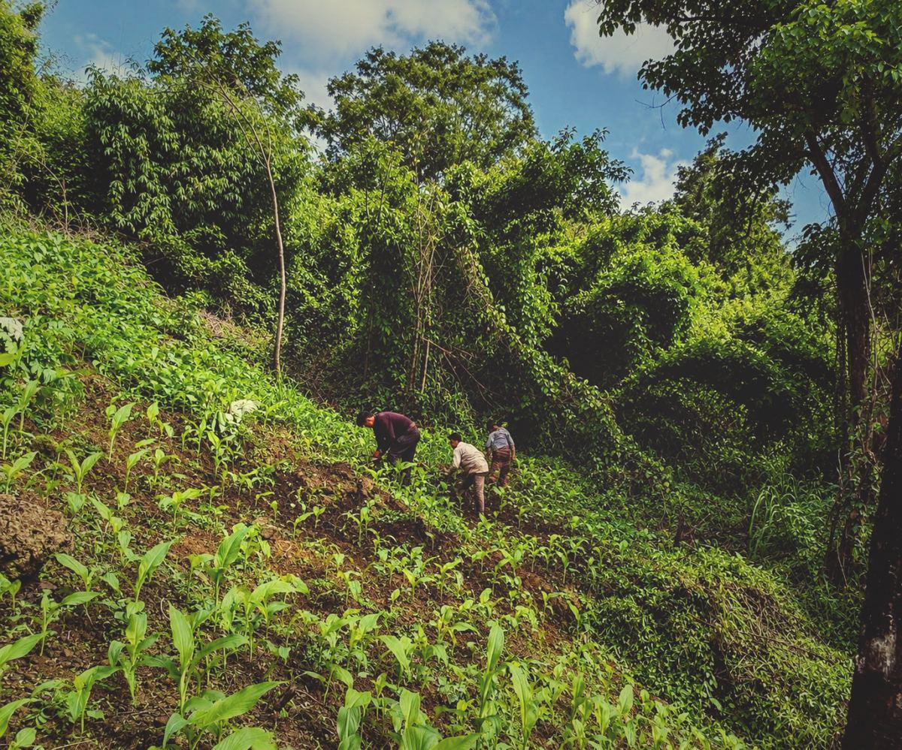
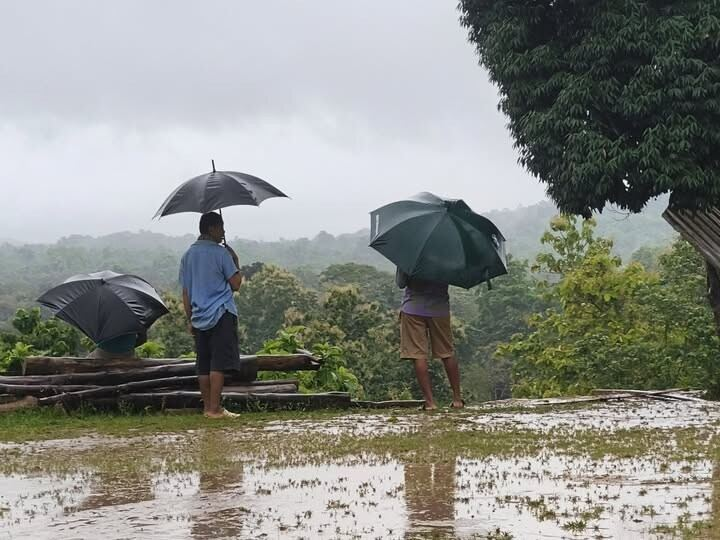
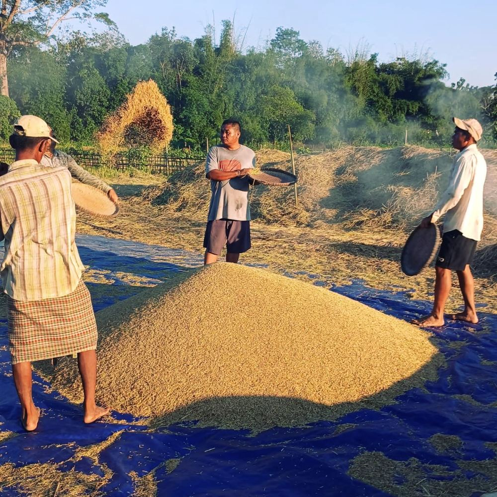
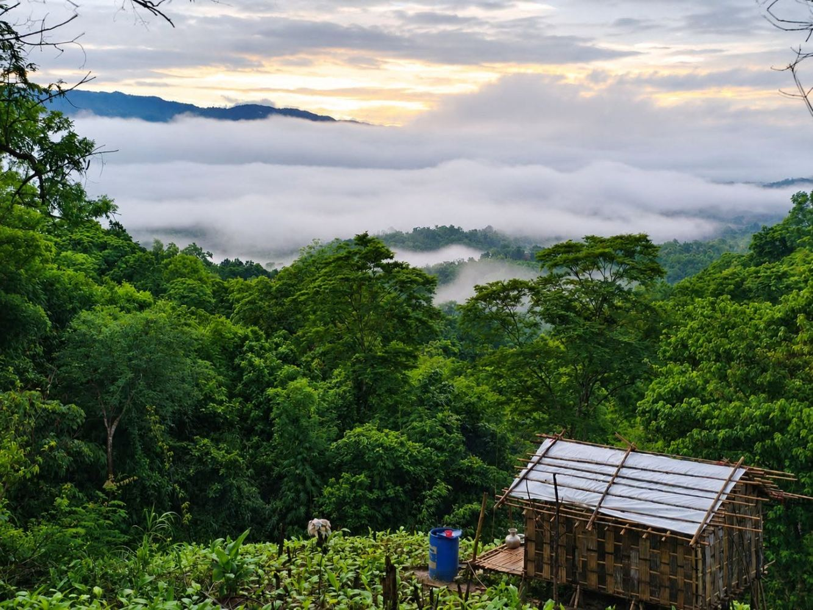
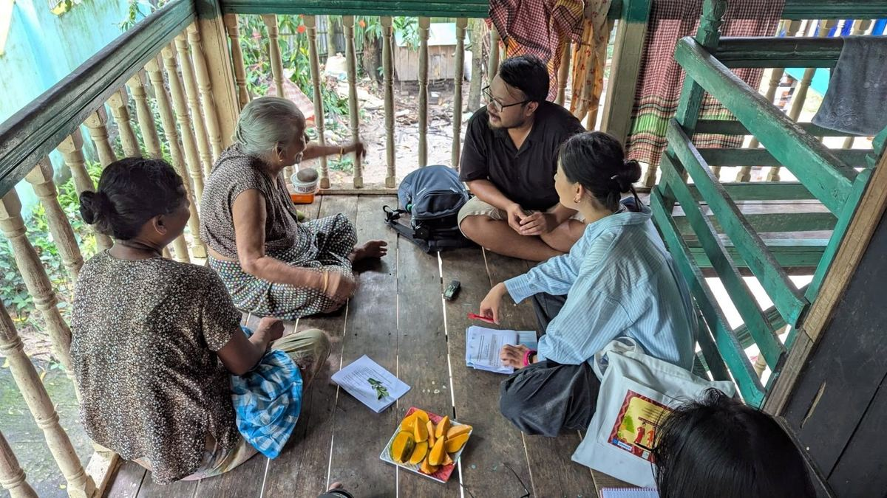

If this question is asked in a seminar room, you will get a confident “yes.” But if it is asked in a remote village in the Chittagong Hill Tracts (CHT) and you will get a more complicated answer, with one that has less to do with helplessness and more to do with a system that has worked for generations but now being pushed past its limit.
I’ve spent time working with jhum families across Rangamati, Khagrachhari and Bandarban for my research projects and through Jhum Revolution. What I’ve seen doesn’t fit neatly into “victim” narrative that dominates climate reporting nor into the opposite, equally flattening narrative of the endlessly “resilient” Indigenous community. The truth sits in between: these communities have a working body of ecological knowledge and adaptive practice.
What’s failing the Indigenous communities isn’t a lack of capacity — it’s land tenure insecurity, deforestation, and policy neglect closing in on a system that used to have room to breathe.
When the Rain Won’t Stop: The 2026 Floods as a Case in Point
This isn’t hypothetical. As I write this, Bangladesh is still absorbing the damage from the monsoon floods that tore through Chattogram division and the Hill Tracts in July 2026. Several news media, e.g. Daily Star, Dhaka Tribune and Prothom Alo, reported over 50 people have died across Chattogram, Cox’s Bazar, and the three hill districts of Rangamati, Khagrachhari, and Bandarban, with the toll driven largely by landslides, hill collapses, and drowning. More than a million people have been affected, hundreds of thousands of families displaced into shelters. Specifically in the Hill Tracts, roads to Bandarban and Sajek were cut off entirely for days, leaving tourists and residents alike stranded.
The agricultural toll is just as severe. The Business Standard, citing government damage assessments, reported nearly 16,000 hectares of cropland damaged across the division, fisheries losses exceeding Tk91 crore, and more than 1.1 lakh livestock and poultry killed, with total livestock losses estimated at over Tk30 crore. For hill farmers, that isn’t an abstract statistic, it’s a wiped-out season, a submerged seedbed, a family that has to decide whether to rebuild on the same slope or not.

None of this is new. The Hill Tracts flooded catastrophically in 2017, killing over 150 people in landslides in a single week. The pattern that’s emerging is not “occasional disaster” but “recurring stress” and recurring stress is exactly the kind of thing Indigenous adaptive systems were built to handle, provided they’re given the land, time, and institutional support to do so. Right now, they aren’t.
Agriculture Under Pressure: The Shrinking Jhum Cycle
Jhum, the traditional shifting cultivation system practiced by Chakma, Marma, Tripura, Mro, and other Indigenous communities in the CHT, was never a crude “slash and burn” it was a rotational system with a built-in recovery period. A plot would be cultivated for one or two seasons, then left fallow for 10 to 20 years to let the forest and soil regenerate before being farmed again.

Nowadays, that fallow cycle has collapsed. Population pressure, shrinking available land, and encroachment have pushed the cycle down to 2 to 3 years in many areas. It is nowhere near enough time for soil fertility or forest cover to recover. The result is a system running in overdraft: lower yields, more erosion, and land that becomes progressively less forgiving of the very practice that used to sustain it.
This is the part of the story that gets lost when climate change is treated as a purely meteorological event. Erratic rainfall and hotter temperatures are compounding a stress that land scarcity was already creating. Farmers aren’t just contending with a changing climate, they are contending with a changing climate on a shrinking, degrading land base, with far less institutional recognition of their land rights than lowland farmers have.
Food and Daily Life: The Quiet Disruptions

The headline numbers, e.g. deaths, hectares, taka lost don’t capture what a changing climate actually does to daily life in a hill village. Year after year, not just during a single disaster.
Erratic rainfall means the planting calendar that jhum farmers relied on for generations no longer holds rains arrive late, then all at once, then not at all for weeks, making it harder to know when to sow or when a crop is safe from either drought or flash flooding. Rising heat is shortening the growing window for some traditional crops and pushing families to alter what they plant and when.
When heavy rainfall or landslide debris damage or destroy the Jhum or their rice field, families lose not just income but their immediate food supply, and in the hills specifically, landslide-blocked roads mean that even when relief reaches the district, it can take days to physically get to isolated communities.
Their food system itself is built on labour, not just land. After a jhum harvest, rice still has to be threshed, winnowed, and sun-dried by hand. It is a communal process, often done together as families and neighbors, spread across tarpaulins in the open air, dependent on a few days of clear, dry weather to finish properly.

When rainfall becomes erratic, that drying window shrinks along with everything else: grain left out too long in unexpected rain, molds or sprouts, turning an already reduced yield into an even smaller usable one. A shrinking harvest that also can not be safely dried is a food security problem multiplying on itself, and it’s rarely counted in official damage assessments the way a flooded field is.
Indigenous Knowledge: The System Nobody’s Funding
The “Machang Ghor” an elevated bamboo stilt house, has long been a defining feature of traditional architecture in the Chittagong Hill Tracts. Built to withstand seasonal flooding while reducing the risks of landslides and encounters with wild animals, it reflects generations of practical knowledge shaped by close interaction with the local environment. More than a dwelling, the Machang Ghor represents an enduring form of climate adaptation embedded in Indigenous architectural traditions.

This adaptive knowledge extends well beyond housing. Traditional food storage methods, seasonal foraging calendars, and community farming and social practices are all synchronized with environmental rhythms and guided by careful observation of natural indicators. These practices have enabled Indigenous communities to anticipate seasonal changes, manage resources sustainably, and strengthen their resilience to climate variability for generations. Long before the term climate adaptation entered global discourse, these Indigenous knowledge systems were already providing effective, locally grounded solutions for living with environmental change.
However, the accelerating impacts of climate change are increasingly undermining the reliability of these traditional knowledge systems. Rainfall patterns have become more erratic, dry seasons are longer and hotter, and extreme weather events occur with greater frequency and intensity. Environmental cues that once guided planting, harvesting, foraging, and water management are becoming less predictable as weather patterns depart from historical norms. As a result, Indigenous communities are finding it more difficult to rely solely on inherited knowledge to make decisions that have sustained them for generations.
At the same time, there has been limited investment in strengthening the adaptive capacity of these communities. Climate adaptation policies and development initiatives often overlook Indigenous knowledge or fail to meaningfully involve Indigenous peoples in planning and decision-making. While these communities continue to face increasing climate risks including landslides, prolonged droughts, flash floods, declining soil fertility, and water scarcity; there remains a significant gap in targeted adaptation measures that build upon and reinforce their existing resilience.
This knowledge is not static folklore. It’s a living, adaptive system, and increasingly it’s being carried forward by youth and women’s networks groups like UNESCO’s Youth As Researchers initiative and the Hill Women’s Federation who are documenting traditional practices while also pushing for formal recognition and policy inclusion. That combination matters: preserving the knowledge and fighting for the institutional standing to act on it.

Rather than replacing Indigenous knowledge, climate adaptation efforts should seek to complement and strengthen it. Integrating traditional ecological knowledge with scientific climate information, promoting climate-resilient agricultural practices, improving water harvesting and storage systems, supporting resilient housing, and ensuring Indigenous participation in policy development can enhance community resilience while preserving cultural heritage.
By combining centuries of locally grounded experience with modern adaptation strategies, policymakers, researchers, and development practitioners can help ensure that Indigenous communities in the Chittagong Hill Tracts are better equipped to navigate an increasingly uncertain climate while maintaining their identity, livelihoods, and connection to the land.
So, Victims or Not?
The answer is neither simple nor binary. To portray Indigenous communities in the Chittagong Hill Tracts merely as victims is to ignore generations of knowledge, innovation, and adaptation that have enabled them to live with a dynamic and often challenging environment. Their agricultural systems, housing designs, food preservation practices, and ecological knowledge demonstrate that resilience is not a new concept but it has been embedded in their way of life for centuries.
The honest answer is that these are communities with a functioning adaptive system operating under structural constraint. The real challenge is not their ability to adapt, but the structural barriers they face. The future of climate adaptation in the Chittagong Hill Tracts should not be built on replacing Indigenous knowledge with external solutions. Climate adaptation efforts must move beyond treating Indigenous peoples as beneficiaries and instead recognize them as partners, strengthening their resilience through secure land rights, community-led adaptation, inclusive governance, and the integration of Indigenous and scientific knowledge.
If we fail to support these communities, we will not only lose more than livelihoods but also we risk losing one of Bangladesh’s richest repositories of climate adaptation knowledge. But if we invest in Indigenous leadership and recognize their expertise, the Chittagong Hill Tracts can become a model of how traditional wisdom and modern science together can build a more resilient future.
Originally published on LinkedIn, 22 July 2026. Read and comment there.